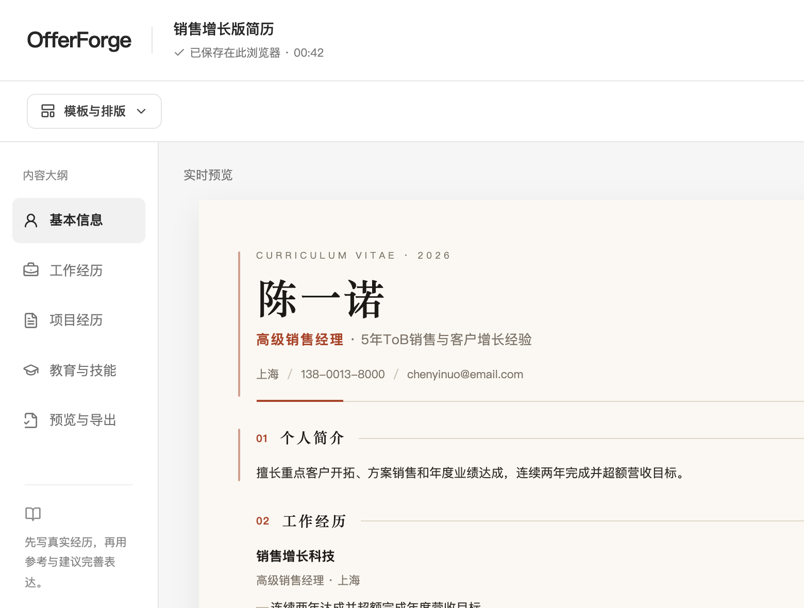
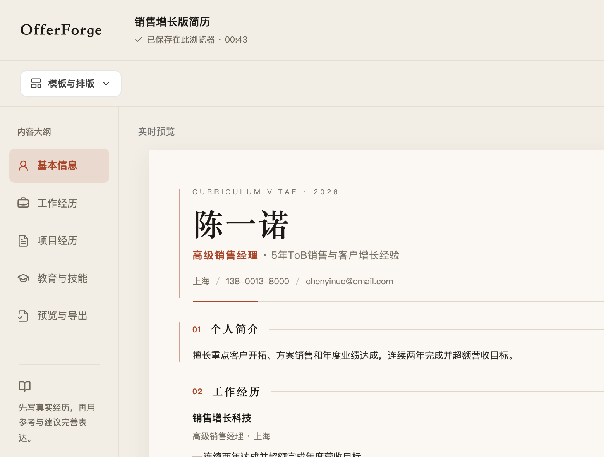
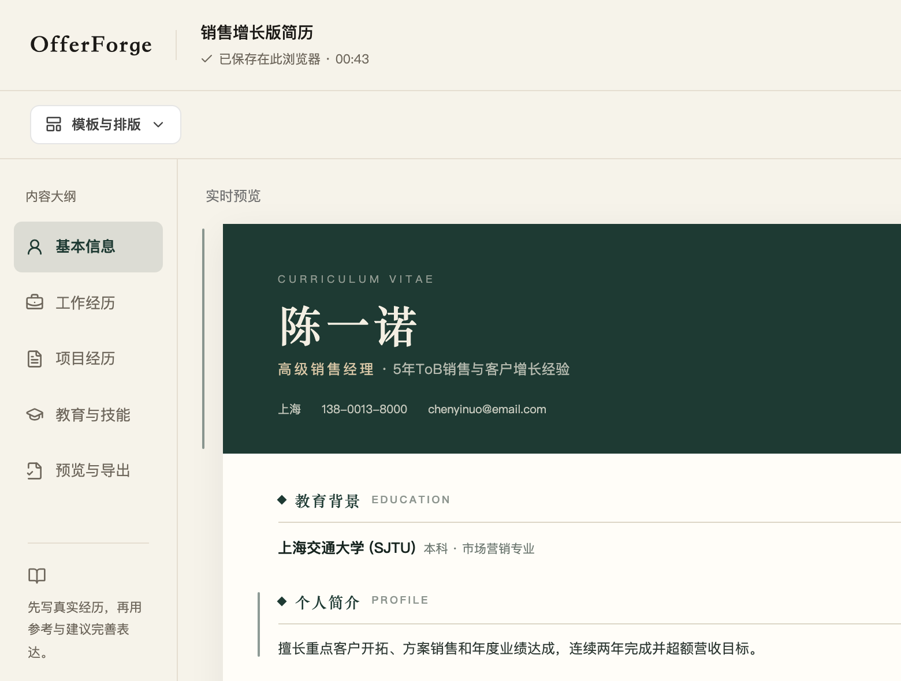

字标无衬线、主按钮近黑、选中项灰底。和纸面没有共同语言。

米色底、衬线字标、陶土红主按钮，选中项用同色淡底。

中性白底，蓝色只做主按钮与当前项，和网格纸面一样克制。

米白底、衬线字标、墨绿主按钮，呼应纸面的深色头图。
同一块区域，四套外壳

字标无衬线、主按钮近黑、选中项灰底。和纸面没有共同语言。

米色底、衬线字标、陶土红主按钮，选中项用同色淡底。
中性白底，蓝色只做主按钮与当前项，和网格纸面一样克制。

米白底、衬线字标、墨绿主按钮，呼应纸面的深色头图。